from numpy.random import normal as rnorm
import pandas as pd
import statsmodels.api as sm
def get_coefs(n = 100, true = 1):
U = rnorm(size=n) # Unmeasured confounder
X = 0.5 * U + rnorm(size=n) # Treatment influenced by U
Y = true * X + U + rnorm(size=n) # Outcome influenced by X and U
data = pd.DataFrame({'X': X, 'U': U, 'Y': Y})
# Fit a linear regression model with and
# without adjusting for the unmeasured confounder
model = sm.OLS(data['Y'], sm.add_constant(data['X'])).fit()
model2 = sm.OLS(data['Y'], sm.add_constant(data[['X', 'U']])).fit()
return model.params['X'], model2.params['X']
def simulate_confounding(nreps = 100, n = 100, true=1):
results = []
for _ in range(nreps):
results.append(get_coefs(n, true))
results = np.mean(results, axis=0)
return pd.DataFrame({
'true': true,
'estimate_1': results[0],
'estimate_2': results[1],
}, index=['X']).round(3)
simulate_confounding(n=1000, nreps=500)12 Causal Modeling

- All those causal effects will be lost in time, like tears in rain… without adequate counterfactual considerations.
- Roy Batty (paraphrased)
Causal inference is a very important topic in machine learning and statistical modeling approaches. It is also a very difficult one to understand well, or consistently, because not everyone agrees on how to define a cause in the first place. Our focus here is merely practical- we just want to discuss some of the modeling approaches commonly used when attempting to answer causal questions. But causal modeling in general is such a deep topic that we won’t be able to go into as much detail as it deserves. However, we will try to give you a sense of the landscape and some of the key ideas.
12.1 Key Ideas
- No model can tell you whether a relationship is causal or not. Causality is inferred, not proven, based on the available evidence.
- The same models could be used for similar data settings to answer a causal question or a purely predictive question. A key difference is in the interpretation of the results.
- Experimental design, such as randomized control trials, are considered the gold standard for causal inference. But the gold standard is often not practical, and not without its limitations even when it is.
- Causal inference is often done with observational data, which is often the only option, and that’s okay.
- Counterfactual thinking is at the heart of causal inference, but can be useful for all modeling contexts.
- Several models exist which are typically employed to answer a more causal-oriented question. These include graphical models, uplift modeling, and more.
- Interactions are the norm for most modeling scenarios, while causal inference generally regards a single effect. If an effect varies depending on other features, you should be cautious trying to aggregate your results to a single effect, since that effect would be potentially misleading.
12.1.1 Why it matters
Often we need a precise statement about the feature-target relationship, not just a declaration that there is ‘some’ relationship. For example, we might want to know how well a drug works and for whom, or show that an advertisement results in a certain amount of new sales. We generally need to know whether the effect is real, and the size of the effect, and often, the uncertainty in that estimate.
Causal modeling is, like machine learning, more of an approach than a specific model, and that approach may involve the design or implementation of models we’ve already seen, but conducted in a different way to answer the key question. Without more precision in our understanding, we could miss the effect, or overstate it, and make bad decisions as a result.
12.1.2 Helpful context
This section is pretty high level, and we are not going to go into much detail here, so even just some understanding of correlation and modeling would likely be enough.
12.2 Prediction and Explanation Revisited
We introduced the idea of prediction and explanation in the context of linear models in Section 3.4.3, and it’s worth revisiting here. One attribute of a causal model is an intense focus on the explanatory power of the model. We want to demonstrate that there is a relationship between (usually) a single feature and the target, and we want to know the precise manner of this relationship as much as possible. Even if we use complex models, the endeavor is to explain the specifics.
Let’s say that we used some particular causal modeling approach to explain a feature-target relationship in a classification setting. We have 10,000 observations, and the baseline rate of the target is about ~50%. We have a model that predicts the target y based on the feature of interest x, and we may have used some causal technique like propensity score weighting or some other approach to help control for confounding (we’ll discuss these later).
The coefficient, though small with an odds ratio of 1.05, is statistically significant (take our word for it), so we have a slight positive relationship. Under certain settings such as this, where we are interested in causal effects and where we have controlled for various other factors to obtain this result, we might be satisfied with interpreting this relationship as is.

But if we are interested in predictive performance, we would be disappointed with this model. It predicts the target at about the same rate as guessing, even on the data it’s fit on, and does even worse with new data. Even the effect as shown is quite small by typical standards, as it would take a standard deviation change in the feature to get a ~1% change in the probability of the target (x is standardized).
If we are concerned solely with explanation, we now would want to ask ourselves first if we can trust our result based on the data, model, and various issues that went into producing it. If so, we can then see if the effect is large enough to be of interest, and if the result is useful in making decisions1. It may very well be, maybe the target concerns the rate of survival, where any increase is worthwhile. Or perhaps the data circumstances demand such interpretation, because it is costly to obtain more. For more exploratory efforts however, this sort of result would likely not be enough to come to any strong conclusion, even if explanation is the only goal.
As another example, consider the world happiness data we’ve used in previous demonstrations. We want to explain the association of country level characteristics and the population’s happiness. We likely aren’t going to be as interested in predicting next year’s happiness score, but rather what attributes are correlated with a happy populace in general. For another example, in the U.S., we might be interested in specific factors related to presidential elections, of which there are relatively very few data points. In these cases, explanation is the focus, and we may not even need a model at all to come to our conclusions.
So we can see that in some settings we may be more interested in understanding the underlying mechanisms of the data, and in others we may be more interested in predictive performance. However, the distinction between prediction and explanation in the end is a bit problematic, not the least of which is that we often want to do both.
Although it’s often implied as such, prediction is not just what we do with new data. It is the very means by which we get any explanation of effects via coefficients, marginal effects, visualizations, and other model results. Additionally, when the focus is on predictive performance, if we can’t explain the results we get, we will typically feel dissatisfied, and may still question how well the model is actually doing.
Here are some ways we might think about different modeling contexts:
- Descriptive Analysis: Here we have an exploration of data with no modeling focus. We’ll use descriptive statistics and visualizations to help us understand what’s going on. An end product may be an infographic or a highly visual report. Even here, we might use models to aid visualizations, or otherwise to help us understand the data better, but their specific implementation or result is not of much interest.
- Exploratory Modeling: When using models for exploration, focus should probably be on both prediction and explanation. The former can help inform the strength of the results for future exploration, while the latter will often provide useful insights.
- Causal Modeling: Here the focus is on understanding causal effects. We focus on explanation, and prediction on the current data. We may very well be interested in predictive performance also, and often are in industry.
- Generalization: When our goal is generalizing to unseen data as we have discussed elsewhere, the focus is mostly on predictive performance2, as we need something to help us predict things in the future. This does not mean we can’t use the model to understand the data though, and explanation could still possibly be as important depending on the context.
Depending on the context, we may be more interested explanation or predictive performance, but in practice we often want both. It is crucial to remind yourself why you are interested in the problem, what a model is capable of telling you about it, and to be clear about what you want to get out of the result.
12.3 Classic Experimental Design

Many are familiar with the basic idea of an experiment, where we have a treatment group and a control group, and we want to measure the difference between the two groups. The ‘treatment’ could regard a new drug, a marketing campaign, or a new app’s feature. If we randomly assign our observational units to the two groups, say, one that gets the new app feature and the other doesn’t, we can be more confident that the two groups are essentially the same aside from the treatment. Furthermore, any difference we see in the outcome, for example, customer satisfaction with the app, is probably due to the treatment.
This is the basic idea behind a randomized control trial, or RCT. We can randomly assign the groups in a variety of ways, but you can think of it as flipping a coin, and assigning each sample to the treatment when the coin comes up on one side, and to the control when it comes up on the other. The idea is that the only difference between the two groups is the treatment, and so any difference in the outcome can be attributed to the treatment. This is visualized in Figure 12.2, where the color/shapes represent different groups that are the same. Their distribution is roughly similar after assignment to the treatment groups, and would become more so with more data.
12.3.1 Analysis of Experiments
Many of those who have taken a statistics course have been exposed to the simple t-test to determine whether two groups are different. For many this is their first introduction to statistical modeling. The t-test tells us whether the difference in means between the two groups is statistically significant. However, it definitely does not tell us whether the treatment itself caused the difference, whether the effect is large, nor whether the effect is real, or even if the treatment is a good idea to do in the first place. It just tells us whether the two groups are statistically different.
It turns out that a t-test is just a linear regression model. It’s a special case of linear regression where there is only one independent variable, and it is a categorical variable with two levels. The coefficient from the linear regression would tell you the mean difference of the outcome between the two groups. Under the same conditions, the t-statistic from the linear regression and the t-test from a separate function would have identical statistical results.
Analysis of variance, or ANOVA, allows the t-test to be extended to more than two groups, and multiple features, and is also commonly employed to analyze the results of experimental design settings. But ANOVA is still just a linear regression. Even when we get into more complicated design settings such as repeated measures and mixed design, it’s still just a linear model, we’d just be using mixed models (Section 8.3). In general, we’re going to use similar tools to analyze the results of our experiments as we would for other modeling settings.
If linear regression didn’t suggest any notion of causality to you before, it shouldn’t now either. The model is identical whether there was an experimental design with random assignment or not. The only difference is that the data was collected in a different way, and the theoretical assumptions and motivations are different. Even the statistical assumptions are the same whether you use random assignment, or there are more than two groups, or whether the treatment is continuous or categorical.
Experimental design3 can give us more confidence in the causal explanation of model results, whatever model is used, and this is why we like to use it when we can. It helps us control for the unobserved factors that might otherwise be influencing the results. If we can be fairly certain the observations are essentially the same except for the treatment, then we can be more confident that the treatment is the cause of an differences we see, and be more confident in a causal interpretation of the results. But it doesn’t change the model itself, and the results of a model don’t prove a causal relationship on their own. Your experimental study will also be limited by the quality of the data, and the population it generalizes to. Even with strong design and modeling, if care isn’t taken in the modeling process to even assess the generalization of the results (Section 9.4), you may find they don’t hold up4.
12.4 Natural Experiments

As we noted, random assignment or a formal experiment is not always possible or practical to implement. But sometimes we get to do it anyway, or at least we can get pretty close! Occasionally, the world gives us a natural experiment, where the assignment to the groups is essentially random, or where there is clear break before and after some event occurs, such that we examine the change as we would in pre-post design.
The COVID-19 pandemic provides an example of a natural experiment. The pandemic introduced sudden and widespread changes that were not influenced by individuals’ prior characteristics or behaviors, such as lockdowns, remote work, and vaccination campaigns. The randomness in the timing and implementation of these changes allows researchers to compare outcomes before and after the policy implementation or pandemic, or between different regions with varying policies, to infer causal effects.
For instance, we could compare states or counties that had mask mandates to those that didn’t at the same time or with similar characteristics. Or we might compare areas that had high vaccination rates to those nearby that didn’t. But these still aren’t true experiments. So we’d need to control for as many additional factors that might influence the results, e.g. population density, age, wealth and so on, and eventually we might still get a pretty good idea of the causal impact of these interventions.
12.5 Causal Inference
While we all have a natural intuition about causality, it can actually be a fairly elusive notion to grasp. Causality is a very old topic, philosophically dating back millennia, and more formally hundreds of years. Random assignment is a relatively new idea, say 150 years old, and was posited even before Wright, Fisher, and Neyman, and the 20th century rise of statistics. But with stats and random assignment we had a way to start using models to help us reason about causal relationships. Pearl and others came along to provide an algorithmic perspective from computer science, and economists like Heckman also got into the game too. We were even using programming approaches to do causal inference back in the 1970s! Eventually most scientific academic disciplines were well acquainted with causal inference in some fashion, and things have been progressing along for some time.
Because of its long history, causal inference is a broad field, and there are many ways to approach it. We’ve already discussed some of the basics, but there are many other ways to reason about causality. And of course, we can use models to help us understand the causal effects we are interested in.
12.5.1 Key assumptions of causal inference
Causal inference at its core is the process of identifying and estimating causal effects. But like other scientific and modeling endeavors, it relies on several key assumptions to identify and estimate those effects. The main assumptions include:
- Consistency: The potential outcome under the observed treatment is the same as the observed outcome. This suggests there is no interference between units, and that there are no hidden variations of the treatment.
- Exchangeability: The treatment assignment is independent of the potential outcomes, given the observed covariates. In other words, the treatment assignment is as good as random after conditioning on the covariates. This is often referred to as no unmeasured confounding.
- Positivity : Every individual has a positive probability of receiving each treatment level.
It can be difficult to meet these assumptions, and there is not always a clear path to a solution. As an example, say we want to assess a new curriculum’s effect on student performance. We can randomly assign students, but they can interact with one another both in and outside of the classroom. Those who receive the treatment may be more likely to talk to one another, and this could affect the outcome, enhancing its effects if it is beneficial. This would violate our assumption of no interference between units, and we’d need to maybe choose an alternative design or outcome to account for this.
The following demonstrates a common assumption that is regularly guarded against in causal modeling - confounding. The confounder U, is a variable that affects both treatment X and target Y. We’ll generate some synthetic data with a confounder, and fit two models, one with the confounder and one without. We’ll compare the coefficients of the feature of interest in both models.
get_coefficients = function(n = 100, true = 1) {
U = rnorm(n) # Unmeasured confounder
X = 0.5 * U + rnorm(n) # Treatment influenced by U
Y = true * X + U + rnorm(n) # Outcome influenced by X and U
data = data.frame(X = X, Y = Y)
# Fit a linear regression model with and
# without adjusting for the unmeasured confounder
model = lm(Y ~ X, data = data)
model2 = lm(Y ~ X + U, data = data)
c(coef(model)['X'], coef(model2)['X'])
}
simulate_confounding = function(nreps, n, true) {
results = replicate(nreps, get_coefficients(n, true))
results = rowMeans(results)
data.frame(
true = true,
estimate_1 = results[1],
estimate_2 = results[2]
)
}
simulate_confounding(nreps = 500, n = 1000, true = 1)Results suggest that the coefficient for X is different in the two models. If we don’t include the confounder, the feature’s relationship with the target is biased upwardly. The nature of the bias depends on the relationship between the confounder and the treatment and target, but in this case it’s pretty clear!
| true | estimate_1 | estimate_2 |
|---|---|---|
| 1.00 | 1.40 | 1.00 |
Though this is a simple demonstration, it shows why we need to be careful in our modeling and analysis, and if we are interested in causal relationships, we need to be aware of our assumptions and help make them plausible. If we suspect something is a confounder, we can include it in our model to get a more accurate estimate of the effect of the treatment.
More generally, with causal approaches to modeling, we are expressly interested in interpreting the effect of one feature on another, and we are interested in the mechanisms that bring about that effect. We are not just interested in the mere correlation between variables, or just predictive capabilities of the model. As we’ll see though, we can use the same models we’ve seen already, but need these additional considerations to draw causal conclusions.
12.6 Models for Causal Inference
We can use many modeling approaches to help us reason about causal relationships, and this can be both a blessing and a curse. Our models can be more complex, and we can use more data, which can potentially give us more confidence in our conclusions. But we can still be easily fooled by our models, as well as by ourselves. We’ll need to be careful in how we go about things, but let’s see what some of our options are!
Any model can potentially be used to answer a causal question, and which one you use will depend on the data setting and the question you are asking. The following covers a few models that might be seen in various academic and professional settings.
12.6.1 Linear regression
Yep, linear regression. The old standby is possibly the mostly widely used model for causal inference, historically speaking and even today. We’ve seen linear regression as a kind of graphical model Figure 3.2, and in that sense, it can serve as the starting point for structural equation models and others that we’ll talk about next that many consider to be true causal models. It can also be used as a baseline model for other more complex causal model approaches.
Linear regression can potentially tell us for any particular feature, what that feature’s relationship with the target is, holding the other features constant. This ceteris paribus interpretation - ‘all else being equal’ - already gets us into a causal mindset. If we had randomization and no confounding, and the feature-target relationship was linear, we could interpret the coefficient of the feature as the causal effect.
However, your standard linear model doesn’t care where the data came from or what the underlying structure should be. It only does what you ask of it, and will tell you about group differences whether they come from a randomized experiment or not. For example, as we saw earlier, if you don’t include potential confounders, you could get a biased estimate of the effect5. It also cannot tell you whether X effects Y or vice versa. So linear regression by itself cannot save us from the difficulties of causal inference, nor really can be considered a causal model. But it can be useful as a starting point in conjunction with other approaches.
12.6.2 Graphical models & structural equation models

Graphical and Structural Equation Models (SEM) are flexible approaches to regression and classification, and have one of the longest histories of formal statistical modeling, dating back over a century6. As an example, Figure 12.4 shows a directed acyclic graph (DAG) that represents a causal model. The arrows indicate the direction of the causal relationship, and each node is a feature or target, and some features are influenced by others.
In that graph, our focal treatment, or ‘exposure’, is physical activity, and we want to see its effect on a health outcome like cholesterol levels. However, dietary habits would also affect the outcome, and affect how much physical activity one does. Both dietary habits and physical activity may in part reflect access to healthy food. The target in question does not affect any other nodes, and in fact the causal flow is in one direction, so there is no cycle in the graph (i.e., it is ‘acyclic’).
One thing to note relative to the other graphical model depictions we’ve seen, is that the arrows directly flow to a target or set of targets, as opposed to just producing an ‘output’ that we then compare with the target. In graphical causal models, we’re making clear the direction and focus of the causal relationships, i.e., the causal structure, as opposed to the model structure. Also, in graphical causal models, the effects for any given feature are adjusted for the other features in the model in a particular way, so that we can think about them in isolation, rather than as a collective set of features that are all influencing the target7.
Structural equation models are widely employed in the social sciences and education, and are often used to model both observed and latent variables (Section 13.9), with either serving as features or targets8. They are also used to model causal relationships, to the point that historically they were even called ‘causal graphical models’ or ‘causal structural models’. SEMs are actually a special case of the graphical models just described, which are more common in non-social science disciplines. Compared to other graphical modeling techniques like DAGs, SEMs will typically have more assumptions, and these are often difficult to meet9.
The following shows a relatively simple SEM, a latent variable mediation model involving social support and self esteem, and with depression as the outcome of interest (Figure 12.5). Each latent variable has three observed measures, e.g., item scores collected from a psychological inventory or personal survey. The observed variables are caused by the latent, i.e., unseen or hidden, variables. In other words, the observed item score is a less than perfect reflection of the true underlying latent variable, which is what we’re really interested in. The effects of the latent constructs of social support and self esteem on depression may be of equal interest in this setting. For social support, we’d be interested in the direct effect on depression, as well as the indirect effect through self esteem.
Formal graphical models provide a much richer set of tools for controlling various confounding, interaction, and indirect effects than simpler linear models. For this reason, they can be very useful for causal inference. It may be cautionary to note that models like linear regression can be seen as a special case, and we know that linear regression by itself is not a causal model. So in order for these tools to provide valid causal estimates, they need to be used in a way that is consistent with the assumptions of both the underlying causal model as well as the model estimation approach.
12.6.3 Counterfactual thinking

When we think about causality, we really ought to think about counterfactuals. What would have happened if I had done something different? What would have happened if I had done something sooner rather than later? What would have happened if I had done nothing at all? It’s natural to question our own actions in this way, but we can think like this in a modeling context too. In terms of our treatment effect example, we can summarize counterfactual thinking as:
The question is not whether there is a difference between A and B but whether there would still be a difference if A was B and B was A.
This is the essence of counterfactual thinking. It’s not about whether there is a difference between two groups, but whether there would still be a difference if those in one group had actually been treated differently. In this sense, we are concerned with the potential outcomes of the treatment, however defined.
Here is a more concrete example:
- Roy is shown ad A, and buys the product.
- Pris is shown ad B, and does not buy the product.
What are we to make of this? Which ad is better? A seems to be, but maybe Pris wouldn’t have bought the product if shown that ad either, and maybe Roy would have bought the product if shown ad B too! With counterfactual thinking, we are concerned with the potential outcomes of the treatment, which in this case is whether or not to show the ad.
Let’s say ad A is the new one, i.e., our treatment group, and B is the status quo ad, our control group. Without randomization, our real question can’t be answered by a simple test of whether means or predictions are different among the two groups, as this estimate would be biased if the groups are already different in some way to start with. The real effect is whether, for those who saw ad A, what the difference in the outcome would be if they hadn’t seen it.
From a prediction stand point, we can get an initial estimate straightforwardly. We demonstrated counterfactual predictions before in Section 5.6, but we can revisit it briefly here. For those in the treatment, we can just plug in their feature values with treatment set to ad A. Then we just make a prediction with treatment set to ad B. This approach is basically the S-Learner approach to meta-learning, which we’ll discuss in a bit, as well as a simple form of G-computation, widely used in causal inference.
model.predict(X.assign(treatment = 'A')) -
model.predict(X.assign(treatment = 'B'))predict(model, X |> mutate(treatment = 'A')) -
predict(model, X |> mutate(treatment = 'B'))With counterfactual thinking explicitly in mind, we can see that the difference in predictions is the difference in the potential outcomes of the treatment. This is a very simple demo to illustrate how easy it is to start getting some counterfactual results from our models. But it’s typically not quite that simple in practice, and there are many ways to get this estimate wrong as well. As in other circumstances, the data and our assumptions about the problem can potentially lead us astray. But, assuming those aspects of our modeling endeavor are in order, this is one way to get an estimate of a causal effect.
12.6.4 Uplift modeling

The counterfactual prediction we just did provides a result that can be called the uplift or gain from the treatment, particularly when compared to a baseline metric. Uplift modeling is a general term applied to models where counterfactual thinking is at the forefront, especially in a marketing context. Uplift modeling is not a specific model per se, but any model that is used to answer a question about the potential outcomes of a treatment. The key question is what is the gain, or uplift, in applying a treatment vs. the baseline? Typically any statistical model can be used to answer this question, and often the model is a classification model, for example, whether Roy from the previous section bought the product or not.
It is common in uplift modeling to distinguish certain types of individuals or instances, and we think it’s useful to extend this to other modeling contexts as well. In the context of our previous example they are:
- Sure things: those who would buy the product whether or not shown the ad.
- Lost causes: those who would not buy the product whether or not shown the ad.
- Sleeping dogs: those who would buy the product if not shown the ad, but not if they are shown the ad. Also referred to as the ‘Do not disturb’ group!
- Persuadables: those who would buy the product if shown the ad, but not if not shown the ad.
We can generalize these conceptual groups beyond the marketing context to any treatment effect we might be interested in. So it’s worthwhile to think about which aspects of your data could correspond to these groups. One of the additional goals in uplift modeling is to identify persuadables for additional treatment efforts, and to avoid wasting money on the lost causes. But to reach such goals, we have to think causally first!
12.6.5 Meta-Learning
Meta-learners are used in machine learning contexts to assess potentially causal relationships between some treatment and outcome. The core model can actually be any kind you might want to use, but in which extra steps are taken to assess the causal relationship. The most common types of meta-learners are:
- S-learner - single model for both groups; predict the (counterfactual) difference as when all observations are treated vs when all are not, similar to our previous demonstrations of counterfactual predictions.
- T-learner - two models, one for each of the control and treatment groups respectively; get predictions as if all observations are ‘treated’ (i.e., using the treatment model) versus when all are ‘control’ (using the control model), and take the difference.
- X-learner - a more complicated modification to the T-learner using a multi-step approach.
- R-learner - also called (Double) Debiased ML. An approach that uses a residual-based model to adjust for the treatment effect10.
Some variants of these models exist also. As elsewhere, the key idea is to use the model to predict the potential outcomes of the treatment levels to estimate the causal effect. Most models traditionally used in a machine learning context, e.g., random forests, boosted trees, or neural networks, are not designed to accurately estimate causal effects, nor correctly estimate the uncertainty in those effects. Meta-learners attempt to address the issue with regard to the effect, but you’ll typically still have your work cut out for you to understand the uncertainty in that effect.
12.6.6 Others models used for causal inference
Note that there are many models that would fall under the umbrella of causal inference. But typically these models are only a special application of some of the ones we’ve already become well acquainted with, so you should feel good about trying them out. Here are a few you might come across specific to the causal modeling domain:
- G-computation, doubly robust estimation, targeted maximum likelihood estimation11
- Marginal structural models12
- Instrumental variables and two-stage least squares13
- Propensity score matching/weighting
- Regression discontinuity design14
- Difference-in-differences15
- Mediation/moderation analysis16
- Meta-analysis
- Bayesian networks
In general, any modeling technique can be employed as part of a causal modeling endeavor. To actually make causal statements, you’ll generally need to ensure that the assumptions for those claims are tenable.
12.7 Wrapping Up
We’ve been pretty loose in our presentation here, and glossed over many details with causal modeling. Our main goal is to give you some idea of the domain, but more so the models used and things to think about when you want to answer a causal question with your data.
Models used in statistical analysis and machine learning are not causal models, but when we take a causal model from the realm of ideas and apply it to the real world, a causal model becomes a statistical/ML model with more assumptions, and with additional steps taken to address those assumptions17. These assumptions are required in order to make stronger causal statements, but neither the assumptions, data, nor model can prove that the underlying theory is causally correct. Things like random assignment, sampling, a complex model and good data can possibly help the situation, but they can’t save you from a fundamental misunderstanding of the problem, or data that may still be consistent with that misunderstanding. Nothing about employing a causal model inherently makes better predictions either.
Causal modeling is hard, and most of the difficulty lies outside of the realm of models and data. The model implemented reflects the causal theory, which can be a correct or incorrect idea about how the world works. In the end, the main thing is that when we want to make causal statements, we’ll make do with what data we have, and be careful that we rule out some of the other obvious explanations and issues. The better we can control the setting, or the better we can do things from a modeling standpoint, the more confident we can be in making causal claims. Causal modeling is really an exercise in reasoning, which makes it such an interesting endeavor!
12.7.1 The common thread
Engaging in causal modeling may not even require you to learn any new models, but you will typically have to do more to be able to make causal statements. The key is to think about the problem in a different way, and to be more clear and careful about the assumptions you are making. You may need to do more work to ensure that your data and chosen model are consistent with the assumptions you are making.
12.7.2 Choose your own adventure
From here you might revisit some of the previous models and think about how you might use them to answer a causal question. You might also look into some of the other models we’ve mentioned here, and see how they are used in practice via the additional resources.
12.7.3 Additional resources
We have only scratched the surface here, and there is a lot more to learn. Here are some resources to get you started:
- Causal Inference in R Barrett, McGowan, and Gerke (2024)18
- Causal Inference The Mixtape Cunningham (2023)
- Causal Inference for the Brave and True Facure Alves (2022)
- Applied Causal Inference Powered by ML and AI Chernozhukov et al. (2024)
- Metalearners for estimating heterogeneous treatment effects using machine learning Künzel et al. (2019)
- The C-Word Hernán (2018)
12.8 Guided Exploration
If you look into causal modeling, you’ll find mention of problematic covariates such as colliders or confounders. We’ve talked about confounders already. A collider is a variable that is caused by two other variables, and when you condition on it, it can induce a spurious relationship between those two variables.
In this exercise, we’ll look at a simple example of a collider in the manner we did the confounder. First, run the available code to see what you get. Then, attempt to incorporate the simulation approach we used for the confounder example (Section 12.5.1), and change some of the relevant coefficients around.
import numpy as np
import pandas as pd
from sklearn.linear_model import LinearRegression
# Set seed for reproducibility
np.random.seed(42)
# Generate synthetic data
n = 2500
x = np.random.normal(size=n) # the feature
y = np.random.normal(size=n) # the target (no relation to x)
z = x + y + np.random.normal(size=n) # the collider
data = pd.DataFrame({'x': x, 'y': y, 'z': z})
# Fit linear models
model_without_z = LinearRegression().fit(data[['x']], data['y'])
model_with_z = LinearRegression().fit(data[['x', 'z']], data['y'])
# Compare x coefficients
pd.DataFrame({
'estimate_1': model_without_z.coef_[0],
'estimate_2': model_with_z.coef_[0]
}, index=['x']).round(3)# Set seed for reproducibility
library(tidyverse)
set.seed(42)
# Generate synthetic data
n = 2500
x = rnorm(n) # the feature
y = rnorm(n) # the target (no relation to x)
z = x + y + rnorm(n) # the collider
data = tibble(x = x, y = y, z = z)
# Fit linear models
model_without_z = lm(y ~ x, data = data)
model_with_z = lm(y ~ x + z, data = data)
# Compare x coefficients
tibble(
estimate_1 = coef(model_without_z)['x'],
estimate_2 = coef(model_with_z)['x']
)This is a contrived example, but it is definitely something that you might see in the wild. The relationship is weak, and though statistically significant, the model can’t predict the target well at all. The statistical power is actually decent in this case, roughly 70%, but this is mainly because the sample size is so large and it is a very simple model setting. The same coefficient with a base rate of around 5% would have a power of around 20%.
This is a common issue, and it’s why we always need to be careful about how we interpret our models. In practice, we would generally need to consider other factors, such as the cost of a false positive or false negative, or the cost of the data and running the model itself, to determine if the model is worth using.↩︎In causal modeling, there is the notion of transportability, which is the idea that a model can be used in, or generalize to, a different setting than it was trained on. For example, you may see an effect for one demographic group and want to know whether it holds for another. It is closely related to the notion of external validity, and is also related to the concepts we’ve hit on in our discussion of interactions(Section 8.2).↩︎
Note that experimental design is not just any setting that uses random assignment, but more generally how we introduce control in the sample settings.↩︎
Many experimental design settings involve sometimes very small samples due to the cost of the treatment implementation and other reasons. This often limits exploration of more complex relationships (e.g. interactions), and it is relatively rare to see any assessment of performance generalization. It would probably worry many to know how many important experimental results are based on p-values with small data, and this is the part of the problem seen with the replication crisis in science.↩︎
A reminder that a conclusion of ‘no effect’ is also a causal statement, and can also be a biased one. Also, you can come to the same practical conclusion with a biased estimate as with an unbiased one.↩︎
Wright is credited with coming up with what would be called path analysis in the 1920s, which is a precursor to and part of SEM and form of graphical model.↩︎
If we were to model this in an overly simple fashion with linear regressions for any variable with an arrow to it, you could say physical activity and dietary habits would basically be the output of their respective models. It isn’t that simple in practice though, such that we can just run separate regressions and feed in the results to the next one, thought that’s how they used to do it back in the day. We have to take more care in how we adjust for all features in the model, as well as correctly account for the uncertainty if we do take a multi-stage approach.↩︎
Your authors have to admit some bias here, but we hope the presentation for SEM is balanced. We’ve spent a lot of our past dealing with SEMs, and almost every application we saw had too little data and were grossly overfit. Many SEM programming approaches even added multiple ways to overfit the data even further, and it is difficult to trust the results reported in many papers that used them. But that’s not the fault of SEM in general- it can be a useful tool when used correctly, and it can help answer causal questions. But it can easily be misused by those not familiar with its assumptions and limitations.↩︎
VanderWeele (2012) provides a nice overview of the increased assumptions of SEM relative to other methods.↩︎
As a simple overview, think of it this way with Y outcome, T treatment and X confounders/other features. Y and T are each regressed on X via some ML model, and the residuals from both are used in a subsequent model, \(Y_{res} \sim T_{res}\), to estimate the treatment effect. Or, if you know how path analysis works, or even standard linear regression, it’s pretty much just that with ML. As an exercise, start with a linear regression for the target on all features, then just do a linear regression for a chosen focal feature predicted by the non-focal features. Next, regress the target on the non-focal features. Finally, just do a linear regression with the residuals from both models. The resulting coefficient will be what you started with for the focal feature in the first regression.↩︎
The G-computation approach and S-learners are essentially the same approach, but came about from different domain contexts.↩︎
Very common in epidemiology, and a nice introduction can be found in Robins, Hernán, and Brumback (2000).↩︎
Instrumental variables are used in econometrics, and are a way to get around the problem of unmeasured confounding.↩︎
Regression discontinuity design is a quasi-experimental design that is used when comparing an outcome on either side of a threshold, such as a cutoff for a program or policy. The idea is that those just above the threshold are similar to those just below, and the difference in the outcome can be attributed to the program or policy. This is at its core just a pre-post type of analysis.↩︎
Difference-in-differences just involves an interaction of a treatment with something else, typically time.↩︎
Mediation/moderation are special applications of structural equation modeling.↩︎
Gentle reminder that making an assumption does not mean the assumption is correct, or even provable.↩︎
Malcolm Barrett was kind enough to give us a review of the content in this chapter, and their text was a great resource for much of it. As a result, it’s much better than it would have been, and we definitely recommend it for a more in-depth look at causal inference.↩︎